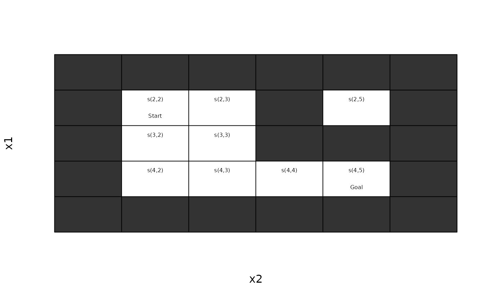
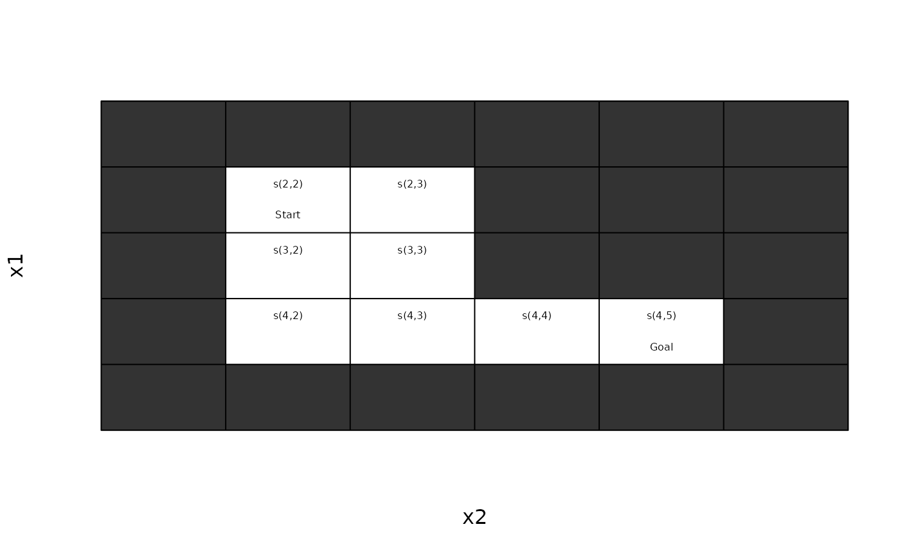

Find or removes unreachable states using the transition model.
Usage
unreachable_states(
model,
horizon = Inf,
sparse = "states",
progress = TRUE,
...
)
remove_unreachable_states(model, ...)Arguments
- model
a MDP object.
- horizon
only states that can be reached within the horizon are reachable.
- sparse
logical; return a sparse logical vector?
- progress
logical; show a progress bar?
- ...
further arguments are passed on.
Value
unreachable_states() returns a
logical vector indicating the unreachable states.
remove_unreachable_states() returns a model with all
unreachable states removed.
Details
The function unreachable_states() checks if states
cannot be reached from any other state. It performs a depth-first
search which can be slow.
The search breaks cycles to avoid an infinite loop.
The search depth can be restricted using
horizon.
The function remove_unreachable_states() simplifies a model by
removing unreachable states from the model description.
Examples
# create a Maze with an unreachable state
maze_unreach <- gw_read_maze(
textConnection(c("XXXXXX",
"XS X X",
"X XXX",
"X GX",
"XXXXXX")))
gw_plot(maze_unreach)

unreachable_states(maze_unreach)
#> [1] "s(2,5)"
unreachable_states(maze_unreach, sparse = FALSE)
#> s(2,2) s(3,2) s(4,2) s(2,3) s(3,3) s(4,3) s(4,4) s(2,5) s(4,5)
#> FALSE FALSE FALSE FALSE FALSE FALSE FALSE TRUE FALSE
maze <- remove_unreachable_states(maze_unreach)
unreachable_states(maze)
#> character(0)
gw_plot(maze)
